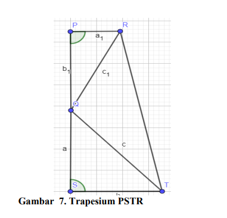
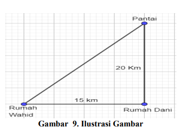
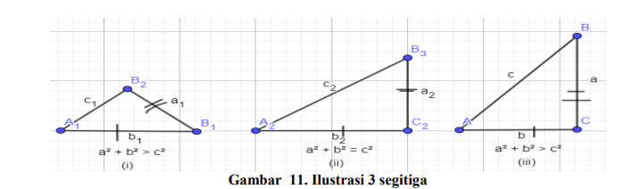

<!DOCTYPE html>
<html lang="en">

<head>
  <meta charset="utf-8">
  <meta content="width=device-width, initial-scale=1.0" name="viewport">

  <title>Materi I dan II</title>
  <meta content="" name="description">
  <meta content="" name="keywords">

  <!-- Favicons -->
  <link rel="shortcut icon" href="LOGO-UNTIRTA.png">

  <!-- Google Fonts -->
  <link rel="preconnect" href="https://fonts.googleapis.com">
  <link rel="preconnect" href="https://fonts.gstatic.com" crossorigin>
  <link href="https://fonts.googleapis.com/css2?family=Open+Sans:ital,wght@0,300;0,400;0,500;0,600;0,700;1,300;1,400;1,500;1,600;1,700&family=Poppins:ital,wght@0,300;0,400;0,500;0,600;0,700;1,300;1,400;1,500;1,600;1,700&family=Source+Sans+Pro:ital,wght@0,300;0,400;0,600;0,700;1,300;1,400;1,600;1,700&display=swap" rel="stylesheet">

  <!-- Vendor CSS Files -->
  <link href="assets/vendor/bootstrap/css/bootstrap.min.css" rel="stylesheet">
  <link href="assets/vendor/bootstrap-icons/bootstrap-icons.css" rel="stylesheet">
  <link href="assets/vendor/aos/aos.css" rel="stylesheet">
  <link href="assets/vendor/glightbox/css/glightbox.min.css" rel="stylesheet">
  <link href="assets/vendor/swiper/swiper-bundle.min.css" rel="stylesheet">

  <!-- Variables CSS Files. Uncomment your preferred color scheme -->
  <link href="assets/css/variables.css" rel="stylesheet">
  <!-- <link href="assets/css/variables-blue.css" rel="stylesheet"> -->
  <!-- <link href="assets/css/variables-green.css" rel="stylesheet"> -->
  <!-- <link href="assets/css/variables-orange.css" rel="stylesheet"> -->
  <!-- <link href="assets/css/variables-purple.css" rel="stylesheet"> -->
  <!-- <link href="assets/css/variables-red.css" rel="stylesheet"> -->
  <!-- <link href="assets/css/variables-pink.css" rel="stylesheet"> -->

  <!-- Template Main CSS File -->
  <link href="assets/css/main.css" rel="stylesheet">

  <!-- =======================================================
  * Template Name: HeroBiz - v2.1.0
  * Template URL: https://bootstrapmade.com/herobiz-bootstrap-business-template/
  * Author: BootstrapMade.com
  * License: https://bootstrapmade.com/license/
  ======================================================== -->
</head>

<body>

  <!-- ======= Header ======= -->
  <header id="header" class="header fixed-top" data-scrollto-offset="0">
    <div class="container-fluid d-flex align-items-center justify-content-between">

      <a href="index.html" class="logo d-flex align-items-center scrollto me-auto me-lg-0">
        <!-- Uncomment the line below if you also wish to use an image logo -->
        <!--  -->
        <h1>Hanifa Nur Fidhia Andriana Putri<span>.</span></h1>
      </a>

      <nav id="navbar" class="navbar">
        <ul>

          <li class="dropdown"><a href="#"><span>Home</span> <i class="bi bi-chevron-down dropdown-indicator"></i></a>
            <ul>
              <li><a href="index.html">Pengertian</a></li>
              <li><a href="index-2.html">Sejarah</a></li>
              <li><a href="index-3.html">Tokoh Pythagoras</a></li>
              <li><a href="index-4.html" class="active">Materi I dan II</a></li>
            </ul>
          </li>
          <li class="dropdown"><a href="#"><span>Geogebra </span><i class="bi bi-chevron-down dropdown-indicator"></i></a>
            <ul>
              <li><a href="index-5.html">Geogebra</a></li>
              <li><a href="index-13.html">Petunjuk Penggunaan</a></li>
            </ul>
          </li>
          <li class="dropdown"><a href="#"><span>EVALUASI</span><i class="bi bi-chevron-down dropdown-indicator"></i></a>
            <ul>
              <li><a href="index-6.html">1-3</a></li>
              <li><a href="index-7.html">4-6</a></li>
              <li><a href="index-8.html">7-9</a></li>
              <li><a href="index-9.html">10-12</a></li>
              <li><a href="index-10.html">13-15</a></li>
            </ul>
          </li>
          <li class="dropdown"><a href="#"><span>Kesimpulan </span><i class="bi bi-chevron-down dropdown-indicator"></i></a>
            <ul>
              <li><a href="index-11.html">Kesimpulan</a></li>
            </ul>
          </li>
          <li class="dropdown"><a href="#"><span>BIOGRAFI </span><i class="bi bi-chevron-down dropdown-indicator"></i></a>
            <ul>
              <li><a href="index-12.html">BIOGRAFI</a></li>
            </ul>
          </li>


    </div>
  </header><!-- End Header -->

  <section id="hero-static" class="hero-static d-flex align-items-center">
    <div class="container d-flex flex-column justify-content-center align-items-center text-center position-relative" data-aos="zoom-out">
      <h2>Materi <span>I dan II </span></h2>
      <h4>MATERI I </h4>
      <h5>I.1 Memeriksa kebenaran teorema Pythagoras </h5>
      <p>Teorema pythagoras berbunyi bahwa “ pada sembarang segitiga siku-siku, 
        kuadrat dari panjang sisi terpanjang (hypotenusa) sama dengan jumlah dari kuadrat 
        panjang masing-masing sisi-sisi segitiga yang lain. “. Disini kita akan membuktikan 
        kebenaran teorema pythagoras dengan beberapa cara. Mari kita masuk kedalam cara yang 
        pertama.</p><br>
      <h5>I.1.1 Pembuktian pertama </h5>
      <p>Pembuktian paling sederhana tentang kebenaran teorema pythagoras dengan 
        menggunakan luas segitiga dan luas persegi (Strathern, 2009). Jika kita punya segitiga 
        siku-siku, cobalah menyusunnya membentuk persegi. Penyusunannya bisa dimulai dari 
        mana saja, misalkan kita susun dari kiri atas, kemudian kanan atas, lalu kanan bawah, dan 
        terakhir kiri bawah. Maka akan terbentuk persegi besar (persegi ABCD) dan pesergi kecil 
        (persegi PQRS) seperti pada gambar 2 di bawah ini: </p><br>
      <br>
      <p>Misalkan ABCD adalah sebuah persegi dengan panjang sisinya 𝑎 + 𝑏 satuan 
        panjang. Misalkan F adalah titik pada AD dengan demikian 𝑃D = 𝑏1. Hal serupa berlaku 
        untuk titik-titik E, G, H pada sisi DC, CB dan BA. Dapat ditunjukkan bahwa EFGH, 
        dengan panjang sisi masing-masing c adalah sebuah persegi. </p><br>
      <p>Perhatikan bahwa: </p><br>
      <p>𝐿𝑢𝑎𝑠 𝑃𝑒𝑟𝑠𝑒𝑔𝑖 𝐴𝐵𝐶𝐷 = 𝐿𝑢𝑎𝑠 𝑃𝑒𝑟𝑠𝑒𝑔𝑖 𝑃𝑄𝑅𝑆 + (4 × 𝐿𝑢𝑎𝑠 ∆ 𝐴𝑃𝑆)</p>
      <p>(𝑎 + 𝑏)² = 𝑐² +(4 × ½ × 𝑎 × 𝑏)</p>
      <p> 𝑎²+ 2𝑎𝑏 + 𝑏² = 𝑐² + 2𝑎𝑏</p>
      <p>𝑎² + 𝑏² = 𝑐²</p><br>

      <h5>I.1.2 Pembuktian Kedua</h5>
      <p>Bukti cara 2 ini ditemukan oleh Presiden Amerika Serikat J.A. Garfield pada 
        tahun 1876 (Jupri, 2019). Dalam pembuktiannya, ia menggunakan rumus luas trapesium. 
        Pertama dibuatkan segitiga yang identik yaitu ∆𝑃𝑄𝑅 dan ∆𝑆𝑇𝑄. Panjang sisi 𝑃𝑅 = 𝑆𝑄 = 
        𝑎, 𝑃𝑄 = 𝑆𝑇 = 𝑏 dan 𝑄𝑅 = 𝑇𝑄 = 𝑐. Dimana 𝑄𝑅 = 𝑇𝑄 = 𝑐 sebagai sisi miring.</p><br>
      <br>
      <p>Kemudian pada sisi 𝑃𝑄 = 𝑏 disusun dan bertemu dengan sisi 𝑄𝑆 = 𝑎 sehingga
        membentuk suatu garis PS seperti gambar berikut : </p><br>
      <br>
      <p>Selanjutnya, tarik titik garis TR sehingga membentuk sebuah trapesium PSTR 
        seperti gambar di bawah ini:
      </p><br>
      <br>
      <p>Diketahui bahwa ∠𝑅𝑃𝑄 = ∠𝑄𝑆𝑇 = 90°. Dimisalkan ∠𝑄𝑅𝑃 = 𝛼 dan ∠𝑃𝑄𝑅 = 𝛽. 
        Karena ∆𝑃𝑄𝑅 ≅ ∆𝑄𝑆𝑇 (kongruen), maka ∠𝑇𝑄𝑆 = 𝛼 dan ∠𝑆𝑇𝑄 = 𝛽. Diketahui juga 
        jumlah sudut di dalam segitiga adalah 180°.</p><br>
      <p>∠𝑅𝑃𝑇 +∠𝑄𝑅𝑃 + ∠𝑃𝑄𝑅 = 180°</p>
      <P>90° + (𝛼 + 𝛽) = 180°
      </P>
      <p>(𝛼 + 𝛽) = 90°</p>
      <p>Sudut yang dibentuk oleh garis PS adalah 180°.</p>
      <P>∠𝑃𝑄𝑅 + ∠𝑄𝑆𝑇 + ∠𝑅𝑄𝑇 = 180°</P>
      <p> (𝛽 +𝛼)+ ∠𝑅𝑄𝑇 = 180°
      </p>
      <p>90° + ∠𝑅𝑄𝑇 = 180°</p>
      <p>∠𝑅𝑄𝑇 = 90°</p><br>
      <p>Trapesium 𝑃𝑆𝑇𝑅 terbentuk dari 3 segitiga siku-siku yaitu ∆𝑃𝑄𝑅, ∆𝑆𝑇𝑄, dan 
        ∆𝑄𝑇𝑅 sehingga luas daerah trapesium 𝑃𝑆𝑇𝑅 sama dengan luas daerah ketiga segitiga 
        siku-siku sebagai penyusunnya yang 
        dijelaskan sebagai berikut:</p><br>
      <p>½ (𝑎 + 𝑏)(𝑎 + 𝑏) = ½ (𝑎 × 𝑏)+ ½ (𝑏 × 𝑎) + ½ (𝑐 × 𝑐)</p>
      <p>½ (𝑎² +2𝑎𝑏 + 𝑏² ) = ½ 𝑎𝑏 + ½ 𝑎𝑏 + ½ 𝑐²</p>
      <p>𝑎²+ 2𝑎𝑏 + 𝑏² = 2𝑎𝑏 + 𝑐²
      </p>
      <p>𝑎² +𝑏² = 𝑐²
      </p><br>

      <p>Nah itu dia beberapa pembuktian dari teorema Pythagoras. Sebenernya masih 
        banyak lagi metode-metode lain terkait pembuktian teorema Pythagoras akan tetapi untuk 
        basic pengetahuan umumnya bisa dipelajari dari metode pembuktian diatas.
        </p><br>

      <h5>I.2 Menerapkan teorema Pythagoras untuk menyelesaikan masalah</h5>
      <p>Pythagoras dapat diterapkan diberbagai bidang. Kita bisa menentukan jarak dua titik 
        pada sistem koordinat, mengecek kesikuan benda dengan menggunakan teorema 
        Pythagoras. Pada bangun ruang misalnya, dengan menggunakan teorema Pythagoras pula 
        kita bisa menentukan panjang diagonal sisi dan panjang diagonal ruang.</p><br>
      <h5>I.2.1 Pada permainan benteng-bentengan</h5>
      <p>Sebelumnya Apakah kalian pernah bermain benteng-bentengan? Kalian berada 50 
        meter sebelah utara dan 20 meter sebelah timur dari benteng kalian. Benteng lawan kalian 
        berada di 80 meter sebelah utara dan 60 meter sebelah timur dari bentengkalian.
        Bagaimanakah menentukan jarak kalian dengan benteng lawan kalian? Masalah ini bisa 
        kalian selesaikan dengan menggunakan teorema Pythagoras.</p><br>
      <br>
      <p>Setelah kita menentukan koordinat kalian dan benteng lawan, selanjutnya kita 
        menentukan jarak kalian dan benteng lawan dengan menggunakan teorema Pythagoras. 
        Jarak kalian dan benteng lawan kalian dapat ditentukan seperti berikut.</p><br>
      <p>X = √ 40² + 30² </p>
      <p>= √1.600 + 900</p>
      <p>= √2.500 </p>
      <p>= 50 </p><br>
      <p>Jadi, jarak kalian dengan benteng lawan kalian adalah 50 meter
      </p><br>
      <h5>I.2.2 Menentukan Selisih Waktu</h5>
      <p>Apakah kalian tahu jika teorema pythagoras dapat membantu kita menentkan 
        selisih waktu? Bagaimana bisa? Mari kita simak satu contoh berikut.</p><br>
      <p>Suatu hari Wachid dan Dani merencanakan akan pergi berlibur ke pantai. Wachid 
        menjemput Dani untuk berangkat bersama-sama ke pantai. Rumah Wachid berada di 
        sebelah barat rumah Dani dan pantai yang akan mereka kunjungi terletak tepat di sebelah 
        utara rumah Dani. Jarak rumah Wachid dan Dani adalah 15 km, sedangkan jarak rumah 
        Dani ke pantai adalah 20 km. Jika kecepatan rata-rata bersepeda motor Wachid adalah 30 
        km/jam, tentukan selisih waktu yang ditempuh Wachid, antara menjemput Dani dengan 
        langsung berangkat sendiri ke pantai</p>
      <br>
      <p>Berdasarkan gambar dapat diketahui total jarak yang ditempuh Wachid menuju ke pantai 
        adalah 15 + 20 = 35 km. Sehingga dengan kecepatan rata-rata 30 km/jam, waktu yang 
        dibutuhkan untuk sampai ke pantai adalah 35 km ÷ 30 km/jam = 1,67 jam atau setara 
        dengan 70 menit. Namun, jika Wachid tidak perlu menjemput Dani, maka menggunakan 
        teorema Pythagoras dapat dicari jarak terpendek dari rumah Wachid ke pantai yaitu:</p><br>
      <p>√15² + 20² </p>
      <p>= √225 + 400</p>
      <p>= 625 </p>
      <p>= 25 km </p><br>

      <P>Dengan kecepatan 30 km/jam Wachid hanya memerlukan waktu 25 ÷ 30 = 0,83 jam atau 
        setara dengan 50 menit. Jadi, selisih waktu antara Wachid menjemput dengan tidak 
        menjemput Dani adalah 70 − 50 = 20 menit</P><br>
      <h5>I.2.3 Mengukur Ketinggian pesawat</h5>
      <p>Kelebihan Pythagoras lainnya adalah dapat membantu kita untuk mengukur ketinggian 
        pesawat. Bagaimana bisa? Mari kita simak lagi contoh berikut
        </p><br>
      <br>
      <h5>II.I Menentukan jenis segitiga</h5>
      <p>Setelah mempelajari teorema Pythagoras dan kebalikan dari teorema tersebut, 
        lantas bagaimana jika kita diberikan ukuran panjang tiga sisi suatu segitiga namun tidak 
        memenuhi persamaan dari teorema Pythagoras? Termasuk jenis segitiga yang bagaimana? 
        Apakah teorema Pythagoras bisa berlaku untuk semua jenis segitiga</p><br>
      <h6>Ayo Kita Amati!</h6>
      <p>Dengan menggunakan kebalikan dari teorema Pythagoras, kita bisa menguji 
        apakah segitiga yang telah diketahui panjang ketiga sisinya merupakan segitiga siku-siku 
        atau bukan segitiga siku-siku. Selain itu, kita juga bisa menentukan segitiga lancip atau 
        segitiga tumpul dengan menggunakan kebalikan dari teorema Pythagoras. Lakukan 
        kegiatan berikut untuk menentukan jenis segitiga jika panjang sisi-sisinya sudah 
        diketahui. </p><br>
      <p>1. Sediakan lidi dan potong menjadi berbagai ukuran, antara lain 6cm, 8 cm, 10 cm, 
        12 cm, dan 13 cm.</p>
      <p>2. Ambil tiga lidi dengan panjang masing-masing 6 cm, 8 cm, dan 10 cm.</p>
      <p>3. Buatlah segitiga dari ketiga lidi tersebut dan tempelkan di atas kertas. </p>
      <p>4. Amati segitiga yang terbentuk dari ketiga lidi. Jenis segitiga apakah yang dapat 
        dilihat? </p>
      <p>5. Lakukan langkah nomor 2 dan 4 untuk tiga lidi yang berukuran 8 cm, 12 cm, dan 
        13 cm. </p>
      <p>6. Lakukan langkah nomor 2 dan 4 untuk tiga lidi yang berukuran 6 cm, 8 cm, dan 
        12 cm</p><br>
      <p>Berdasarkan ketiga segitiga yang telah kalian buat, buatlah pertanyaan terkait dengan 
        hubungan panjang ketiga sisi segitiga. Misalnya, bagaimanakah hubungan panjang ketiga 
        sisi pada segitiga pertama? Bagaimanakah hubungan panjang ketiga sisi pada segitiga 
        kedua?
        </p><br>
      <br>
      <p>Untuk ∆ACB dengan panjang sisi-sisinya a, b, dan c: </p>
      <p>• Jika c² < a² + b² , maka ∆ACB merupakan segitiga lancip di C. Sisi c dihadapan sudut 
        C. </p>
      <p>• Jika c² > a² + b² , maka ∆ACB merupakan segitiga tumpul di C</p><br>
      <p>Untuk lebih mengerti tentang materi diatas mari kita pahami conoth soal berikut.
        Suatu segitiga dengan panjang ketiga sisinya berturut-turut 17cm, 25cm, dan 38cm. 
        Apakah segitiga yang dimaksud adalah segitiga siku-siku?</p><br>
      <p>Misalkan panjang sisi yang terpanjang dari segitiga tersebut adalah c, 
        Maka a = 17 cm, b = 25 cm, dan c = 38 cm. </p>
      <p>c² = 382 = 1.444 </p>
      <p>a² + b² = 172 + 252 = 289 + 625 = 914 Karena c² ≠ a² + b² </p>
      <p>berarti bahwa segitiga yang dimaksud bukan segitiga siku-siku. Karena c² > a²+ b² , maka 
        segitiga tersebut merupakan segitiga tumpul.
        </p><br>
      <h5>II.2 Menentukan Perbandingan Sisi-sisi pada Segitiga Siku-siku Sama 
        kaki</h5>
      <p>Teorema Pythagoras dapat digunakan untuk melakukan penyelidikan terhadap 
        sifat menarik dari segitiga siku-siku sama kaki dan segitiga siku-siku yang besar sudutnya 
        30° - 60° - 90°. Dalam kegiatan ini kita akan menemukan hubungan antar panjang sisi 
        pada segitiga siku-siku sama kaki dan segitiga siku-siku 30° - 60° - 90°.</p><br>
      <p>Salah satu dari segitiga khusus adalah segitiga siku-siku sama kaki dengan besar 
        ketiga sudutnya adalah 45° - 45°- 90°. Setiap segitiga siku-siku sama kaki adalah 
        setengah dari persegi.</p><br>
      <br>
      <p>Salah satu tokoh pythagoras yaitu theodorus dari cyrene yang memiliki pengalaman 
        seperti pythagoras mengemukakan bahwa Roda Theodorus dimulai dengan segitiga sikusiku dengan panjang kedua sisinya adalah 1 satuan panjang dan bergerak berlawanan arah 
        jarum jam. </p><br>
      <h5>II.3 Menentukan Perbandingan Sisi-sisi pada Segitiga yang Bersudut 
        30°, 60°, dan 90° </h5>
      <p>Salah satu dari segitiga khusus lainnya adalah segitiga dengan besar ketiga 
        sudutnya adalah 30° - 60° - 90°. Bagaimana cara kita menentukan hubungan panjang 
        ketiga sisi pada segitiga ini? Sama halnya pada segitiga siku-siku sama kaki, kita bisa 
        dengan mudah menentukan panjang salah satu sisi segitiga siku-siku yang bersudut 30° –
        60° – 90° meskipun hanya diketahui salah satu panjang sisinya. Kita bisa menemukan 
        dengan menggunakan teorema pythagoras sama seperti segitiga-siku lainnya untuk 
        memahaminya segitiga dan sifat-sifat berikut ini</p><br>
      <p>Misal segitiga ABC adalah segitiga sama sisi. Garis CD adalah garis simetris 
        segitiga ABC.
        </p><br>
      <br>
      <p>Berapakah besar segitiga ABC ? setiap segitiga memiliki sudut 180 derajat.
        Berapa besar sudut ACD, ADC, BCD, BDC ? Pertama sudut ACD adalah sudut 30 
        derajat karena segitiga sama sisi memiliki sudut 60 derajat semuannya menjadi tinggal 
        dibangi menjadi 2. Kedua, sudut ADC adalah sudut siku-siku atau 90 detajat karena 
        membagi garis lurus (180 derajat). Ketiga, sudut BCD sama dengan sudut ACD dan sudut 
        BDC sama dengan sudut ADC.
        </p><br>
      <p>Bagaimana dengan panjang garis AD dan BD ? Panjang garis AD dan BD adalah 
        sama karena berada pada garis alas pada segitiga sama sisi. Berapakah perbandingan 
        panjang sisi BD dan AB? Berapakah perbandingan sisi BD dan BC ? Perbandingan 
        panjang sisi BD dan AB adalah 1: 2 karena BD adalah setengah dari AB dan 
        perbandingan BD dan BC adalah 1: 2 karena panjang BC sama dengan AB (segitiga sama 
        sisi). Jika diketahui pada segitiga BDC, panjang BC = 20 cm, tentukan panjang BD dan 
        CD ?</p><br>
      <p>panjang BD adalah setengah dari BC yaitu 10 cm karena BC = AB (segitiga sama 
        sisi) dan panjang CD adalah 10 √3 menggunakan sifat pytagoras yaitu</p>
      <p>CD = √20² -10²
        </p>
      <p>=√400 – 100</p>
      <p>=√300 = 10√3</p>
      </div>
    </div>
  </section>

  <main id="main">

    <!-- ======= Featured Services Section ======= -->
    <section id="featured-services" class="featured-services">
      <div class="container">

        <div class="row gy-4">

          <div class="col-xl-3 col-md-6 d-flex" data-aos="zoom-out">
            <div class="service-item position-relative">
            </div>
          </div><!-- End Service Item -->

          <div class="col-xl-3 col-md-6 d-flex" data-aos="zoom-out" data-aos-delay="200">
            <div class="service-item position-relative">
            </div>
          </div><!-- End Service Item -->

          <div class="col-xl-3 col-md-6 d-flex" data-aos="zoom-out" data-aos-delay="400">
            <div class="service-item position-relative">
            </div>
          </div><!-- End Service Item -->

          <div class="col-xl-3 col-md-6 d-flex" data-aos="zoom-out" data-aos-delay="600">
            <div class="service-item position-relative">
            </div>
          </div><!-- End Service Item -->

        </div>

      </div>
    </section><!-- End Featured Services Section -->
  <a href="#" class="scroll-top d-flex align-items-center justify-content-center"><i class="bi bi-arrow-up-short"></i></a>

  <div id="preloader"></div>

  <!-- Vendor JS Files -->
  <script src="assets/vendor/bootstrap/js/bootstrap.bundle.min.js"></script>
  <script src="assets/vendor/aos/aos.js"></script>
  <script src="assets/vendor/glightbox/js/glightbox.min.js"></script>
  <script src="assets/vendor/isotope-layout/isotope.pkgd.min.js"></script>
  <script src="assets/vendor/swiper/swiper-bundle.min.js"></script>
  <script src="assets/vendor/php-email-form/validate.js"></script>

  <!-- Template Main JS File -->
  <script src="assets/js/main.js"></script>

</body>

</html>